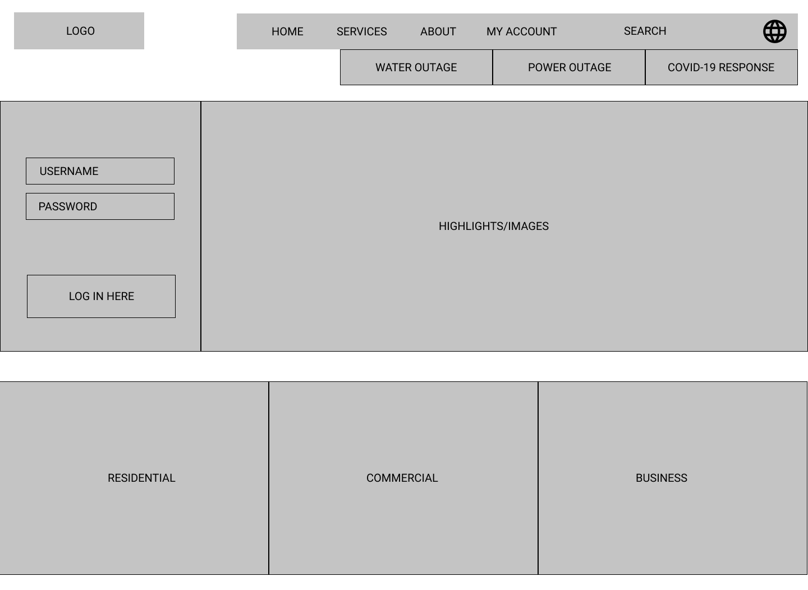

ladwp redesign
overview
Recently, I came across the LADWP website to get more information regarding an assistance program providing relief for the covid pandemic. As I worked my way through Google, in search of the assistance program, I came to face a VERY outdated LADWP website. Given that the main page does note that the site is currently going undergoing reconstruction for a new and updated look, the designer in me couldn't help but attempt my version at the re-design.
goal
🥅 Re-design the outdated home page of the LADWP website to portray a more simple, modern, accessible, and organized layout to users.
🔧 tools
Figma
⏰ duration
2 weeks (jan 2021)
role
Visual Designer
Prototyper
concepts
UI Design
Graphic Design
Prototyping
the problem
⛔Lack of layout, visual hierarchy, and organization.

- Content visible on the homepage looks very cramped.
- The site doesn't utilize enough whitespace to differentiate sections from one another.
- The homepage doesn't expand on relevant information, making it hard for users to discover anything new pertaining to updates, programs, or events offered by LADWP.
⛔Lack of a clear navigation bar, making it hard for users to locate their needs.

⛔Need for better container box that effectively confines all related content within the box.

⛔More coherent color combination for an organized look and easier-to-read layout.

target group
Since LADWP provides services pertaining to utilities for households, the user base for the LADWP website would primarily be people who are 18+, mostly consisting of adults or parents. Therefore, I decided to go with a design that is both professional but simple to digest so that users of any ages will be comfortable with using the website.
navigation layout
To create a clearer navigation bar for users to easily navigate through the LADWP website, I created a simple page navigation map to visualize how the site's navigation might look like. This helped with organizing the contents within each navigation category.

lofi prototype
Before I committed to creating a final design for the homepage, I created a basic layout of where each element would be placed so that I could get a better idea of how the final design would come together. (click to view the full lofi prototype)
style guide
For the style guide, I wanted to create a color palette that induces simple and organized look throughout the site. The main color is the deep blue found in the LADWP logo, paired with white-colored font to contrast the deep blue. Green is used as an accent color to highlight hovers and selections, while orange is used to note important emergency situations like the current pandemic. For the font, I chose the sans-serif font Roboto because of it's clean visual.

final design
This is the final redesign that I came up with for the LADWP homepage! click to view the prototype!